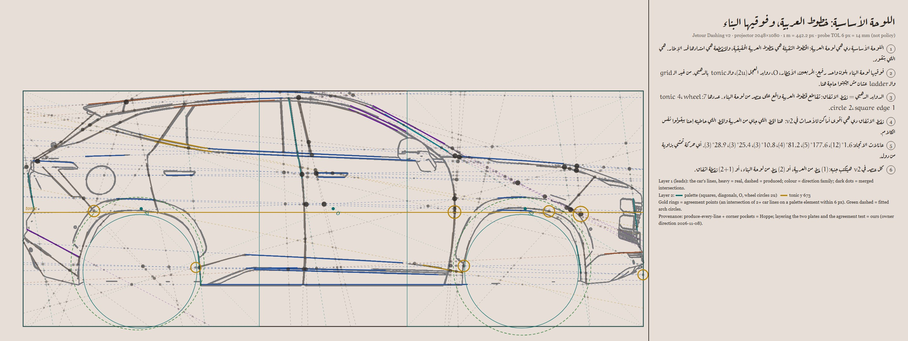

A projection show on the car itself. Every line in the films is placed by the car's own construction: the real lines of the body produced to the frame, the palette laid on them, and the points where both agree.
| element | derived from | source |
|---|---|---|
| unit u | min(2.5 rem, viewport ÷ (2^k + 2)); k = 5 / 4 / 3 by width; one-unit band each side | (2) |
| film width | 24u of the 32u frame; height 24u × 1080 / 2048, the projector's own ratio | (1) |
| label column | 7u, one twin unit from the film | (2) |
| film titles | baseline on the car's tonic (y 672.7 of 1080), produced out of the film | (1+2) |
| section gaps | 2u between films; u between bar, plate and title | (2) |
| plate layer | car frame, tonic, O, both wheel circles (2u from the hubs), the 7 agreement points | (1+2) |
| button | h = u, corner on the √3 rung (tight), one corner for the page | (2) |
(1) a line the car gives · (2) a line laid on it · (1+2) where both meet. The Construction switch draws the plate over every film; the dashed line is the car's tonic, produced to the page edge.